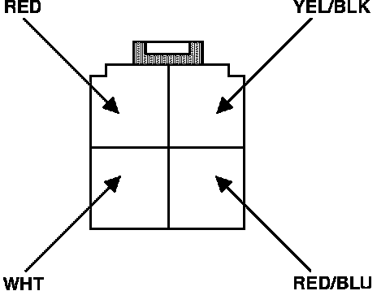

Air Conditioning Signal
A/C Relay Harness Connector Identification:

1. Turn ignition off.
2. Remove compressor clutch relay, (located in the right front corner of the engine compartment), and disconnect from harness.
3. Turn ignition on and check for voltage at YEL/BLK wire.
Battery voltage, proceed to step 5.
No battery voltage, proceed to next step.
4. Check fuse #17 in underdash fuse box. If fuse is OK repair open YEL/BLK wire between compressor relay and fuse box. Continue.
Electronic Control Unit Pin And Connector Identification:

5. With ignition off, install test harness between ECU and harness connector. If test harness is not available, carefully backprobe wires at ECU connector.
6. Reconnect compressor relay.
7. Turn ignition on.
8. Using a test wire jump ECU terminal B8 to ground.
Compressor clutch cycles one time proceed to step 10.
Compressor clutch doesn't cycle, proceed to next step.
9. Check for open RED/BLU wire between ECU terminal B8 and compressor clutch relay. If wire checks OK, refer to AIR CONDITIONING CLUTCH RELAY. End of test.
10. Using a test wire jump ECU terminal B8 to ground.
Compressor clutch cycles one time proceed to next step.
Compressor clutch doesn't cycle, replace electronic control unit. End of test.
11. Electronic control unit circuit functioning properly. If A/C still does not engage, refer to CHASSIS ELECTRICAL DIAGRAMS for additional testing procedures.